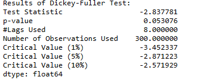
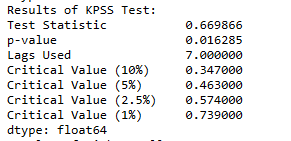

Основные моменты
Стационарность означает, что статистические свойства временного ряда, т. е. среднее значение, дисперсия и ковариация, не меняются с течением времени. Многие статистические модели требуют, чтобы ряды были стационарными, чтобы делать эффективные и точные прогнозы.
Для проверки стационарности временного ряда будут использоваться два статистических теста — расширенный тест Дики-Фуллера («ADF») и тест Квятковского-Филлипса-Шмидта-Шина («KPSS»). Также попробуем преобразовать нестационарный временной ряд в стационарный ряд.
import matplotlib.pyplot as plt
import numpy as np
import pandas as pd
import statsmodels.api as smДля примера будем использовать набор данных солнечных пятен. Он содержит ежегодные (1700-2008 гг.) данные о солнечных пятнах из Национального центра геофизических данных.
sunspots = sm.datasets.sunspots.load_pandas().dataПроведем предварительную подготовку данных. Будем использовать "YEAR" как индекс, а сам столбец "YEAR" удалим.
sunspots.index = pd.Index(sm.tsa.datetools.dates_from_range("1700", "2008"))
del sunspots["YEAR"]Теперь постороим график
sunspots.plot(figsize=(12, 8))Тест ADF
Тест ADF используется для определения наличия единичного корня в ряду и, следовательно, помогает понять, является ли ряд стационарным или нет.
- Нулевая и альтернативная гипотезы этого теста:
- Нулевая гипотеза: ряд имеет единичный корень (ряд не является стационарным)..
- Альтернативная гипотеза: ряд не имеет единичного корня.
Если нулевую гипотезу не удалось отвергнуть, этот тест может свидетельствовать о нестационарности ряда.
Создадим функцию для проведения теста ADF на временном ряду.
from statsmodels.tsa.stattools import adfuller
def adf_test(timeseries):
print("Results of Dickey-Fuller Test:")
dftest = adfuller(timeseries, autolag="AIC")
dfoutput = pd.Series(
dftest[0:4],
index=[
"Test Statistic",
"p-value",
"#Lags Used",
"Number of Observations Used",
],
)
for key, value in dftest[4].items():
dfoutput["Critical Value (%s)" % key] = value
print(dfoutput)Тест KPSS
KPSS — еще один тест для проверки стационарности временного ряда. Нулевая и альтернативная гипотезы для теста KPSS противоположны таковым для теста ADF.
Нулевая гипотеза: процесс является стационарным по тренду.
Альтернативная гипотеза: ряд имеет единичный корень (ряд не является стационарным).
Напишем функцию для проведения теста KPSS на временном ряду.
from statsmodels.tsa.stattools import kpss
def kpss_test(timeseries):
print("Results of KPSS Test:")
kpsstest = kpss(timeseries, regression="c", nlags="auto")
kpss_output = pd.Series(
kpsstest[0:3], index=["Test Statistic", "p-value", "Lags Used"]
)
for key, value in kpsstest[3].items():
kpss_output["Critical Value (%s)" % key] = value
print(kpss_output)
Тест ADF дает следующие результаты - статистика теста, значение p и критическое значение при доверительных интервалах 1%, 5% и 10%.
Вызовем тест ADF.
adf_test(sunspots["SUNACTIVITY"])
Основываясь на уровне значимости 0,05 и p-значении теста ADF, нулевую гипотезу нельзя отвергнуть. Следовательно, ряд нестационарен.
Вызовем тест KPSS.
kpss_test(sunspots["SUNACTIVITY"])
Основываясь на уровне значимости 0,05 и p-значении теста KPSS, есть основания отвергнуть нулевую гипотезу в пользу альтернативы. Следовательно, по тесту КПСС ряд является нестационарным.
Удаление тренда путем дифференцирования
Это один из самых простых методов устранения тренда временного ряда. Строится новый ряд, в котором значение на текущем временном шаге рассчитывается как разница между исходным наблюдением и наблюдением на предыдущем временном шаге.
Вычислим разность. Нарисуем график.
sunspots["SUNACTIVITY_diff"] = sunspots["SUNACTIVITY"] - sunspots["SUNACTIVITY"].shift(1)
diff = sunspots["SUNACTIVITY_diff"].dropna()
plt.figure(figsize=(12,8))
fig2 = plt.figure(2)
ax1 = fig2.add_subplot(111)
ax1.grid(True)
ax1.set_xlabel('Date')
ax1.set_ylabel('Difference')
plt.plot(diff, color='blue', label='Diff')
plt.legend(loc='best')
plt.title('Sun Activity Difference')
save("ADF_KPSS_pic_4")Проверим полученный ряд на стационарность, запустив тесты ADF и KPSS.
adf_test(diff)
kpss_test(diff)Основываясь на p-значении теста ADF, есть основания отвергнуть нулевую гипотезу в пользу альтернативы. Следовательно, ряд теперь строго стационарен.
Основываясь на p-значении теста KPSS, нулевую гипотезу нельзя отвергнуть. Следовательно, ряд является стационарным.
Полный текст примера:
import matplotlib.pyplot as plt
import numpy as np
import pandas as pd
import statsmodels.api as sm
from statsmodels.tsa.stattools import adfuller
from statsmodels.tsa.stattools import kpss
# Утилита для записи графика в файл
import os
def save(name='', type='png'):
pwd = os.getcwd()
os.chdir('./pictures/')
plt.savefig('%s.%s' % (name, type), format=type)
os.chdir(pwd)
sunspots = sm.datasets.sunspots.load_pandas().data
sunspots.index = pd.Index(sm.tsa.datetools.dates_from_range("1700", "2008"))
del sunspots["YEAR"]
sunspots.plot(figsize=(12, 8))
save("ADF_KPSS_pic_1")
def kpss_test(timeseries):
print("Results of KPSS Test:")
kpsstest = kpss(timeseries, regression="c", nlags="auto")
kpss_output = pd.Series(
kpsstest[0:3], index=["Test Statistic", "p-value", "Lags Used"]
)
for key, value in kpsstest[3].items():
kpss_output["Critical Value (%s)" % key] = value
print(kpss_output)
def adf_test(timeseries):
print("Results of Dickey-Fuller Test:")
dftest = adfuller(timeseries, autolag="AIC")
dfoutput = pd.Series(
dftest[0:4],
index=[
"Test Statistic",
"p-value",
"#Lags Used",
"Number of Observations Used",
],
)
for key, value in dftest[4].items():
dfoutput["Critical Value (%s)" % key] = value
print(dfoutput)
adf_test(sunspots["SUNACTIVITY"])
kpss_test(sunspots["SUNACTIVITY"])
sunspots["SUNACTIVITY_diff"] = sunspots["SUNACTIVITY"] - sunspots["SUNACTIVITY"].shift(1)
diff = sunspots["SUNACTIVITY_diff"].dropna()
plt.figure(figsize=(12,8))
fig2 = plt.figure(2)
ax1 = fig2.add_subplot(111)
ax1.grid(True)
ax1.set_xlabel('Date')
ax1.set_ylabel('Difference')
plt.plot(diff, color='blue', label='Diff')
plt.legend(loc='best')
plt.title('Sun Activity Difference')
save("ADF_KPSS_pic_4")
adf_test(diff)
kpss_test(diff)
Выводы
Используются два теста для проверки стационарности временного ряда, а именно тест ADF и тест KPSS. Удаление тренда осуществляется с помощью разности. Трендовый стационарный временной ряд преобразуется в строгий стационарный временной ряд. Необходимая модель прогнозирования теперь может быть применена к данным стационарного временного ряда.